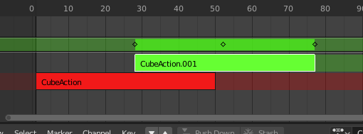
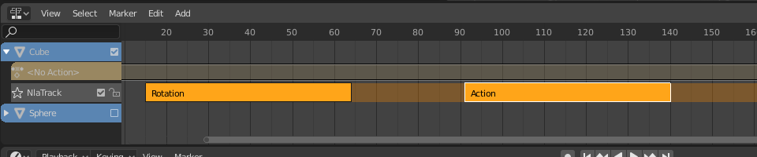
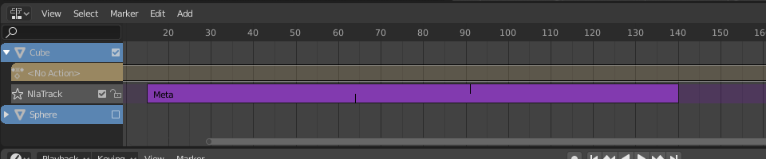
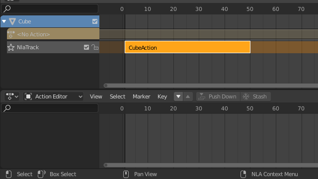
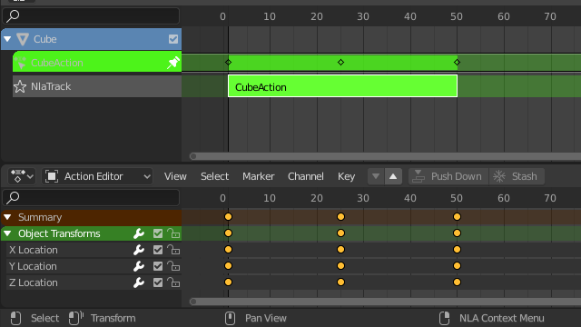

Chỉnh sửa Strip¶
Transform¶
Tham khảo
- Editor:
Nonlinear Animation
- Menu:
- Move G
Di chuyển các strip đang chọn theo thời gian hoặc sang một track khác.
- Extend E
Cho phép bạn nhanh chóng di chuyển các strip đang chọn nằm về một bên nhất định của Playhead. Tính năng này rất tiện khi bạn cần, chẳng hạn, dời toàn bộ strip sau một thời điểm nào đó sang phải để chừa chỗ cho strip mới.
Để dùng toán tử này, trước tiên hãy chọn một phần hoặc toàn bộ strip rồi đưa con trỏ chuột sang trái hoặc phải của Playhead. Sau đó, nhấn E, di chuột để di chuyển (chỉ) những strip ở bên đó của Playhead, rồi nhấn LMB để xác nhận (hoặc RMB để hủy).
Nếu một strip vắt qua Playhead, chỉ điểm bắt đầu/kết thúc của nó sẽ được di chuyển (cũng tùy vào vị trí con trỏ chuột).
- Scale S
Thu phóng các strip đang chọn, dùng Playhead làm điểm neo.
Swap¶
Tham khảo
- Editor:
Nonlinear Animation
- Menu:
- Shortcut:
Alt-F
Đảo thứ tự các strip đang chọn trong track của chúng.
Move Up¶
Tham khảo
- Editor:
Nonlinear Animation
- Menu:
- Shortcut:
PageUp
Di chuyển các strip đang chọn lên một track nếu còn chỗ.
Move Down¶
Tham khảo
- Editor:
Nonlinear Animation
- Menu:
- Shortcut:
PageDown
Di chuyển các strip đang chọn xuống một track nếu còn chỗ.
Snap¶
Tham khảo
- Editor:
Nonlinear Animation
- Menu:
- Selection to Current Frame
Di chuyển điểm bắt đầu của các strip đang chọn đến frame hiện tại.
- Selection to Nearest Frame
Di chuyển điểm bắt đầu của các strip đang chọn đến frame tròn gần nhất.
- Selection to Nearest Second
Di chuyển điểm bắt đầu của các strip đang chọn đến giây gần nhất.
- Selection to Nearest Marker
Di chuyển điểm bắt đầu của các strip đang chọn đến marker gần nhất.
Split¶
Tham khảo
- Editor:
Nonlinear Animation
- Menu:
- Shortcut:
Y
Chia các strip đang chọn thành hai tại frame hiện tại.
Duplicate¶
Tham khảo
- Editor:
Nonlinear Animation
- Menu:
- Shortcut:
Alt-D
Tạo bản sao của các strip đang chọn, đồng thời nhân đôi mọi action mà chúng tham chiếu. Vì vậy, việc chỉnh sửa keyframe trong một strip bản sao không ảnh hưởng đến bản gốc.
Linked Duplicate¶
Tham khảo
- Editor:
Nonlinear Animation
- Menu:
- Shortcut:
Shift-D
Tạo bản sao của các strip đang chọn, tái sử dụng mọi action mà chúng tham chiếu. Vì vậy, việc chỉnh sửa keyframe trong một strip bản sao cũng ảnh hưởng đến bản gốc (và ngược lại). Blender cảnh báo điều này bằng cách tô đỏ strip còn lại.

Strip bản sao liên kết đang được chỉnh sửa.¶
Delete¶
Tham khảo
- Editor:
Nonlinear Animation
- Menu:
- Shortcut:
Delete, X
Xóa các NLA-Strip đang chọn.
Make Meta¶
Tham khảo
- Editor:
Nonlinear Animation
- Menu:
- Shortcut:
Ctrl-G
Nhóm các NLA-strip đang chọn thành một meta strip.
 Chọn hai hoặc nhiều strip.¶ |
 Gộp chúng thành một meta strip.¶ |


Remove Meta¶
Tham khảo
- Editor:
Nonlinear Animation
- Menu:
- Shortcut:
Ctrl-Alt-G
Tách nhóm các meta strip đang chọn, thay thế chúng bằng nội dung bên trong.
Toggle Muting¶
Tham khảo
- Editor:
Nonlinear Animation
- Menu:
- Shortcut:
H
Mute hoặc bỏ mute các strip đang chọn. Strip bị mute có viền đứt nét và không ảnh hưởng đến animation.
Bake Action¶
Tham khảo
- Editor:
Nonlinear Animation
- Menu:
Tham khảo
- Editor:
3D Viewport
- Mode:
Object and Pose Modes
- Menu:
Chuyển động cuối cùng của object và bone không chỉ phụ thuộc vào animation dạng keyframe, mà còn vào modifier F-Curve, driver và constraint. Toán tử Bake Action tính ra chuyển động cuối cùng này và tạo keyframe tương ứng trên mỗi frame của scene.
Điều này có thể hữu ích để thêm độ lệch cho một action tuần hoàn như Walk Cycle, hoặc để tạo animation dạng keyframe từ driver hay constraint.
- Start Frame
Frame bắt đầu bake.
- End Frame
Frame kết thúc bake.
- Frame Step
Số frame nhảy tới mỗi lần bake một frame.
- Only Selected Bones
Chỉ tạo key cho bone đang chọn (chỉ khi bake Pose).
- Visual Keying
Tạo keyframe từ transform cuối cùng (sau khi áp constraint).
- Clear Constraints
Xóa mọi constraint khỏi object/bone đã tạo key, và tạo key kiểu 'visual'.
- Clear Parents
Bake animation lên object rồi xóa parent (chỉ dành cho object).
- Overwrite Current Action
Bake animation vào action hiện tại thay vì tạo action mới (hữu ích khi chỉ bake một phần bone trong armature).
- Clean Curves
Sau khi bake curve, xóa các key dư thừa.
- Bake Data
Những transform dữ liệu nào sẽ được bake.
- Pose:
Bake transform của bone.
- Object:
Bake transform của object.
- Channels
Những kênh nào sẽ được bake.
- Location:
Bake các kênh location.
- Rotation:
Bake các kênh rotation.
- Scale:
Bake các kênh scale.
- B-Bone:
Bake các kênh B-Bone.
- Custom Properties:
Bake các thuộc tính tùy chỉnh.
Apply Scale¶
Tham khảo
- Editor:
Nonlinear Animation
- Menu:
- Shortcut:
Ctrl-A
Áp scale của các strip đang chọn vào action mà chúng tham chiếu.
Clear Scale¶
Tham khảo
- Editor:
Nonlinear Animation
- Menu:
- Shortcut:
Alt-S
Đặt lại scale của các strip đang chọn.
Sync Action Length¶
Tham khảo
- Editor:
Nonlinear Animation
- Menu:
Đặt lại độ dài của strip theo độ dài của action bên dưới, đảm bảo nó (chỉ) phát từ keyframe đầu tiên đến keyframe cuối cùng của action.
Xem thêm
Nút Sync Length Now trong Sidebar, vốn làm cùng một việc.
Make Single User¶
Tham khảo
- Editor:
Nonlinear Animation
- Menu:
- Shortcut:
U
Nhân đôi action ở những chỗ cần thiết để mỗi strip đang chọn có action riêng không bị strip khác dùng. Nhờ đó, bạn có thể yên tâm chỉnh sửa keyframe trong các strip đang chọn mà không ảnh hưởng đến phần nào khác của animation.
Ghi chú
Thao tác này không đệ quy vào bên trong meta strip.
Start Editing Stashed Action¶
Tham khảo
- Editor:
Nonlinear Animation
- Menu:
- Shortcut:
Shift-Tab
Vào Tweak Mode cho action của strip đang chọn, giúp các keyframe của nó có thể được chỉnh sửa trong chẳng hạn Graph Editor. Ngoài ra, đánh dấu track của strip là Solo, mute tất cả track khác -- nhờ đó chúng không còn ảnh hưởng đến animation và bạn có thể tập trung hoàn toàn vào action đang chỉnh sửa.
Dù mục menu nói đến các action được cất đi (muted), điều đó chỉ phản ánh trường hợp sử dụng điển hình. Nó cũng hoạt động với các action không bị mute.
Khi chỉnh sửa xong, hãy nhấp hoặc nhấn Shift-Tab lần nữa.
 Strip ở chế độ NLA.¶ |
 Strip ở chế độ Tweak.¶ |


Start Tweaking Strips Actions (Full Stack)¶
Tham khảo
- Editor:
Nonlinear Animation
- Menu:
- Shortcut:
Tab
Vào Tweak Mode cho action của strip đang chọn, giúp các keyframe của nó có thể được chỉnh sửa. Giữ nguyên tất cả track khác đang bật để bạn vẫn thấy hiệu quả của chúng trong khi thay đổi.
Khi xong, hãy nhấp hoặc nhấn Tab lần nữa.
Ghi chú
Với các transition nằm trên strip đang tweak, việc ánh xạ lại keyframe sẽ thất bại ở những giá trị kênh chịu ảnh hưởng của transition. Một cách khắc phục là tweak active strip mà không đánh giá phần stack NLA phía trên.
Start Tweaking Strips Actions (Lower Stack)¶
Tham khảo
- Editor:
Nonlinear Animation
- Menu:
Vào Tweak Mode cho action của strip đang chọn, giúp các keyframe của nó có thể được chỉnh sửa. Mute mọi track phía trên track hiện tại để chúng không ảnh hưởng đến animation trong khi thay đổi.
Khi xong, hãy nhấp hoặc nhấn Tab.